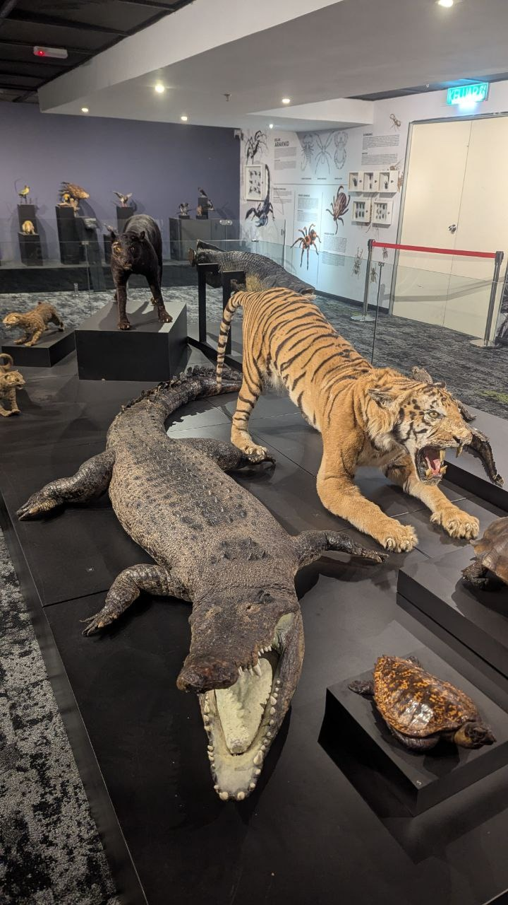

History of Selangor 📜 This exhibition takes visitors on a journey
through time — from the prehistoric era, through the Portuguese, Dutch,
and British colonial periods 🇬🇧, all the way to Malaysia’s independence
🇲🇾. 🧠You’ll discover: ⛠Archaeological artefacts 👑 Dioramas of the
Selangor Sultanate 🏘 Old maps, historical documents & early settlement
models of Selangor
Malay Culture & Traditions This floor is rich with the vibrant customs
and everyday life of the Malay community in Selangor. 🎉 Highlights
include: 👘 Traditional attire 💍 Malay wedding ceremonies 🪀
Traditional folk games 🥁 Musical instruments like kompang and gamelan ⚔
Ancient weapons and village tools 🏡🍛 Replica of a traditional house
and village feast scene
Level 3
The Earth's Revolution From The Beginning
Jurassic Park
Prehistoric Cave
Nature Gallery

Wild Life Exhibition
Nature, Islam & Sports This level showcases the natural beauty of
Selangor, as well as the development of religion and sports. 🌳
Highlights include: Selangor's Biodiversity: replicas of caves,
rainforests, and native animals like the Puchong Crocodile 🐊 Islamic
Exhibition: ancient manuscripts, the history of mosques, and prominent
religious figures 🕌📖 Sports Gallery: the history of state sports
including football and national athletes ⚽🏅 Modern interactive
exhibits & virtual reality experiences 🎮🖥